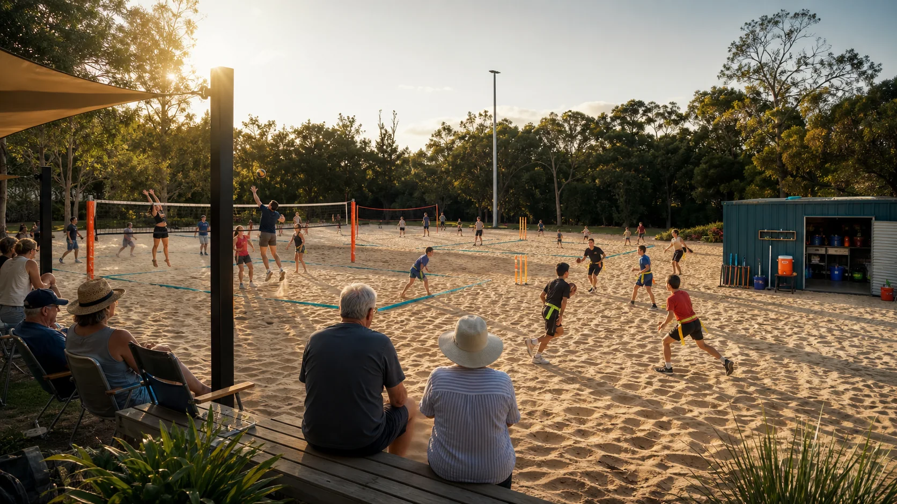

10-12 Ballow Road, Dunwich
Daily operating hub: bookings, beginner sessions, equipment storage, school groups, night-market sport, cinema tie-ins and visitor orientation.

Sand sports
Ballow Road can become the island's everyday sand-sport base: easy to find, easy to book, easy to set up, and adaptable enough for kids, clubs, tourists, schools, older locals and 2032-ready events.
Site vetting
10-12 Ballow Road is the proposed main base for sand sports. Amity and Point Lookout might also make sense after site-by-site vetting: exact footprint, neighbouring users, access, storage, toilets, lighting, traffic, event value and what existing clubs gain. With the Olympics ahead in 2032, multiple sand sports clubs makes sense if they are multi-purpose.
The line is simple: respect rugby league, cricket, tennis, golf, lawn bowls, surfing, sailing, yes every current club and new hot topics like NFL Flag football and pickleball, then add a multi-purpose sand layer for locals and visitors: sport, training, festivals, markets, outdoor cinema, school sessions and pop-up events using the same base.
Daily operating hub: bookings, beginner sessions, equipment storage, school groups, night-market sport, cinema tie-ins and visitor orientation.
Amity is a smaller village context. The sports and recreation reserve continues south beyond the cricket field and Amity Community Club into scrub/regrowth. Any sand-sport idea would be about that zoned reserve land, not the cricket field, oval, club home ground, fixtures or current local uses.
Point Lookout is not the daily base. It has one sports and recreation zone. If sand sport is considered there, start with the only remaining space in that zone: beside the skate park, east of the community hall/library, then check neighbours, traffic, toilets and existing users.
Sport menu
Volleyball in the morning, flag football after school, cricket on market night, training camps in the holidays and one big Sand Sports Expo when the season has momentum. More formats can be added when locals, schools, clubs or visitors bring a workable idea.
Olympic pathway, social doubles and school clinics.
Fast-growing, youth friendly and easy to film.
High energy, strong local roots and good spectator pull.
Broad appeal for families, clubs and social groups.
New, accessible and lighter on the body.
Global sport, youth appeal and easy tournament formats.
Chamber and retiree interest shows social court demand; sand keeps the footprint multi-use.
Markets, outdoor cinema, fundraisers and come-and-try days.
Fast-paced format with strong Queensland fit.
Mixed teams, low barrier and a strong spirit-of-the-game culture.
Quick rounds, spectacular goals and easy crowd energy.
Athlete camps, balance, conditioning and wellbeing sessions.
Why a managed sand base works
A beach is beautiful. A club needs fixtures, storage, shade, water, lights, toilets, safe paths, bookings, maintenance and a place for people to sit. At Point Lookout, the practical question is the spare space inside the existing sports and recreation zone beside the skate park, not the beach and not anyone else's club space.
Post sockets, line sleeves and fast code changes.
Nets, balls, first aid, shade and event kit in one place.
Shade, seating, water, lights and clearer viewing areas.
Paths, toilets, drop-off points and safer movement for all ages.
Pilot questions
Before anyone locks in courts, codes or dates, the island gets to test the shape of the idea. Which sports come first? What would older locals actually use? What would young people show up for? What would current clubs welcome as extra value, not competition?
One marked zone, several courts, a market-night pop-up, or something else?
Volleyball, cricket, flag football, beach tennis, pickleball-style net games, training, family games, or a local invention?
After school, weekends, school holidays, market nights, quiet mornings, visiting-team days, or festival windows?
More young people busy, older locals comfortable, clubs supported, visitors staying longer, local spend, cleaner logistics, or all of the above?